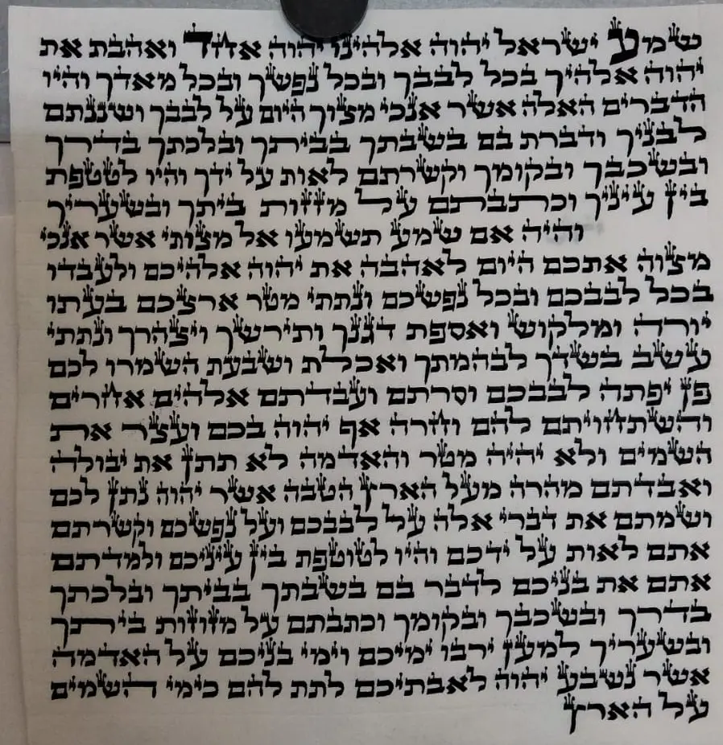
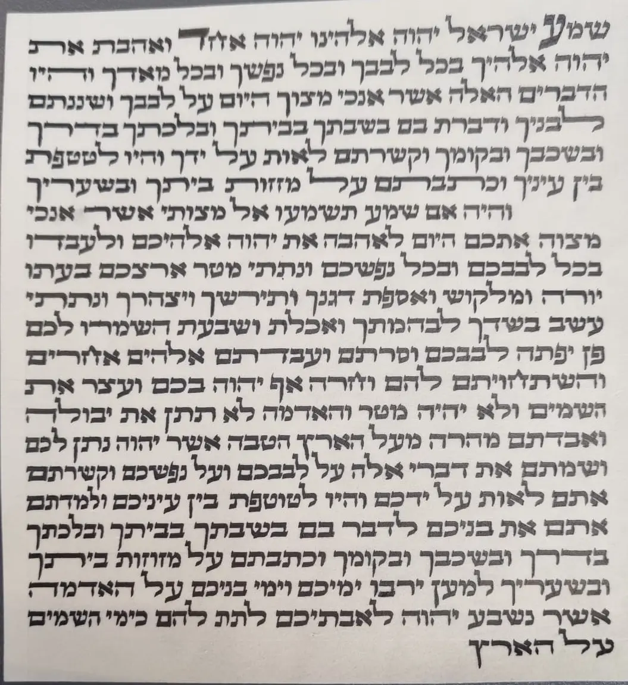

שיפור הכתב הספרדי
דיוק בצורת האותיות, אחידות, יופי, זרימה ושיפור קצב הכתיבה.
לסופרים שכבר כותבים
שיפור הכתב הספרדי והשתלמויות מעשיות, בהתאמה מדויקת לכתב, ליד ולצורת העבודה שלך.
הדרכה אישית וממוקדת
השיעורים מתקיימים במכון אמנות הסת״ם בבני ברק. תחילה מאבחנים את הכתב ואת צורת העבודה, מזהים את הנקודות הטעונות שיפור ובונים דרך מעשית להתקדמות.
אפשר לשלב כמה תחומים באותו מסלול, בהתאם לצורך: צורת האותיות, אחידות, זרימה, מהירות, ישיבה נכונה והתאמת זווית הקולמוס.
תוצאה שאפשר לראות
אותו תלמיד, אותו כתב — לאחר אבחון ממוקד, תיקון דרך העבודה ותרגול מעשי בשיעור.


התוצאה משתנה מתלמיד לתלמיד ותלויה ברמת הכתב, בנקודות הטעונות שיפור ובתרגול.
תחומי ההשתלמות
דיוק בצורת האותיות, אחידות, יופי, זרימה ושיפור קצב הכתיבה.
התאמה נכונה של סביבת העבודה, תנוחת הכתיבה וזווית הקולמוס.
עבודה מעשית ונקייה על מחיקות, תיקונים והכנת הקלף לכתיבה חוזרת.
לימוד מעשי של צורת התגים, סדר העבודה ויצירת תיוג מדויק ואחיד.
הדרכה מקצועית בהכנסת פרשיות, סגירת הבתים ושיפוץ תפילין.
תפירת ספרי תורה ומגילות בצורה מסודרת, חזקה ומקצועית.
הדגמה מעשית
כך נראית עבודה מקצועית ועדינה בתחום הכנסת הפרשיות ושיפוץ התפילין.

לקבוצות מאורגנות
ניתן לארגן השתלמות מרוכזת לכוללים, לבתי מדרש ולקבוצות סופרים. הרב יוחאי אוחיון מגיע למקום ומעביר הדרכה מעשית וממוקדת לפי הנושא שנבחר.
השתלמות בהגהת סת״ם מתקיימת במסגרת קבוצה חיצונית מאורגנת.
השלב הבא בכתב שלך
הרב יוחאי אוחיון · ראש מכון אמנות הסת״ם · מומחה להוראת הכתב הספרדי